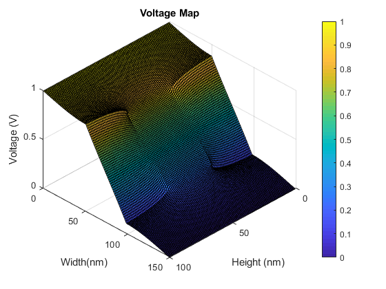

clearvars
clearvars -GLOBAL
close all
clc
PART1
PART2
PART3
disp('Part 3: We can see that the electrons are now struggling to get through the bottleneck, since the electric field is pushing them down.')
disp('To make our simulation more accurate, we would need to have a smaller velocity change between time steps.')
disp('Additionally, we could make the resolution of our G matrix much bigger by creating more bins. This will give us a more accurate E field measurement.')
The electric field is calculated to be:
5.0000e+05
The force due to this field is:
8.0109e-14
The acceleration due to this force is:
3.3823e+17
The current plot below is calculated using current = q_0 * electron concentration * mu * electric field / area
Part 3: We can see that the electrons are now struggling to get through the bottleneck, since the electric field is pushing them down.
To make our simulation more accurate, we would need to have a smaller velocity change between time steps.
Additionally, we could make the resolution of our G matrix much bigger by creating more bins. This will give us a more accurate E field measurement.
